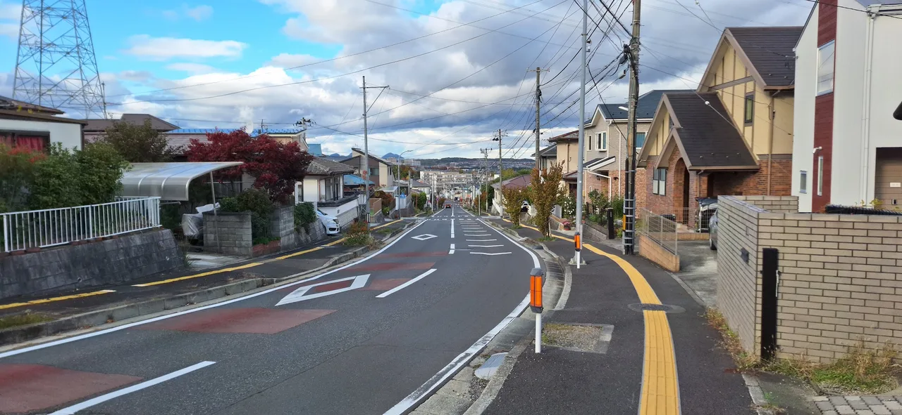

Autonomous multi-agent execution & verification platform. Orchestrates parallel sandboxed agents with stealth browser automation, centralized token-bucket traffic shaping, failover LLM routing, and live telemetry.Plataforma autónoma de ejecución y verificación multi-agente. Orquesta agentes paralelos aislados con automatización de navegadores stealth, modelado de tráfico centralizado por token-bucket, ruteo resiliente de LLMs y telemetría en vivo.
AboutSobre mí
software engineer · systems · web · security-mindedingeniero de software · sistemas · web · mentalidad de seguridad
Hey — I'm a software engineer building backend systems and tools with an attacker's eye for auth, access control, and trust boundaries. I spent time doing bug bounties on HackerOne before focusing on full-stack and systems engineering full-time.
I recently completed a METI-sponsored internship in Sendai, Japan — more on that under experience. Comfortable across backend, frontend, and infra glue. NixOS daily-driver.
Hola — soy ingeniero de software enfocado en construir sistemas backend y herramientas con la mirada analítica de seguridad para auth, control de acceso y límites de confianza. Pasé un tiempo haciendo bug bounties en HackerOne antes de volcarme a la ingeniería full-stack y de sistemas a tiempo completo.
Recién terminé una pasantía patrocinada por METI en Sendai, Japón — más sobre eso en experiencia. Me muevo con comodidad entre backend, frontend y pegamento de infraestructura. Uso NixOS a diario.
stack at a glancestack de un vistazo
Full per-project stack on the projects tab.El stack completo por proyecto está en la pestaña de proyectos.
Languages: English — fluent · Spanish — nativeIdiomas: inglés — avanzado · español — nativo
ProjectsProyectos
selected github work — code, stack, architecture.trabajo seleccionado en github — código, stack, arquitectura.
Production Go + React social media platform with full auth, media handling, and real-time SSE updates. Provisioned via Terraform IaC on AWS EC2 with GitHub Actions CI/CD and automated TLS certbot renewals.Plataforma de red social en Go + React en producción con auth completa, manejo de multimedia y actualizaciones en tiempo real (SSE). Aprovisionada con Terraform IaC sobre AWS EC2 con CI/CD en GitHub Actions y renovación automática de certificados TLS vía certbot.
Handwritten digit recognition using a feed-forward neural network implemented from scratch in NumPy, trained on the MNIST dataset.Reconocimiento de dígitos manuscritos mediante una red neuronal feed-forward implementada desde cero con NumPy y entrenada sobre el dataset MNIST.
SecuritySeguridad
bug bounty / application security — responsible disclosure only.bug bounty / seguridad de aplicaciones — solo divulgación responsable.
Bug bounties on HackerOne
(bautistareynolds, same as GitHub) from 2022 to 2024 — all $7,600 earned on Reddit's program,
top 10 on their thanks page. Focus on web-app logic, auth, and input handling.
Most reports are private per program policy; totals below are disclosed earnings.
Bug bounties en HackerOne
(bautistareynolds, igual que en GitHub) de 2022 a 2024 — los $7,600 fueron todos en el programa
de Reddit, top 10 en su página de agradecimientos. Me enfoco en la lógica de apps web,
auth y manejo de input. La mayoría de los reportes son privados por política del programa;
los totales de abajo son ganancias divulgadas.
bounties earned — redditbounties ganados — reddit
$7,600
all on Reddit · top 10 thanks
- high 1 × $5,000 = $5,000
- medium 4 × $500 = $2,000
- low 6 × $100 = $600
focus areasáreas de enfoque
- web: auth, access control, IDOR, session handling
- recon & asset enumeration, endpoint discovery
- input handling — XSS, SSRF, open redirect (validated, not theoretical)
- report quality: clear repro steps, impact, suggested fix
- web: auth, control de acceso, IDOR, manejo de sesiones
- recon & enumeración de assets, descubrimiento de endpoints
- manejo de input — XSS, SSRF, open redirect (validados, no teóricos)
- calidad de reportes: pasos de reproducción claros, impacto, fix sugerido
approachenfoque
No automated scanner spam. Manual review, reading JS, tracing data flow, checking assumptions at trust boundaries. If a finding is out-of-scope, it stays out.
Nada de spam de scanners automáticos. Revisión manual, leyendo JS, trazando el flujo de datos, verificando suposiciones en los límites de confianza. Si un hallazgo está fuera de scope, se queda fuera.
ExperienceExperiencia
work & internships — most recent first.trabajo & pasantías — lo más reciente primero.
-
Software Engineering Intern — Sendai, JapanPasante de Ingeniería de Software — Sendai, Japón Oct 2025 — Dec 2025 · 3 monthsOct 2025 — Dic 2025 · 3 meses
Selected from 15,000 applicants for a METI-sponsored technical internship at Solacom in Sendai. Worked on the scraping infrastructure behind their platform.
Seleccionado entre 15,000 postulantes para una pasantía técnica patrocinada por METI en Solacom, en Sendai. Trabajé en la infraestructura de scraping detrás de su plataforma.
- Built and maintained production scraping pipelines — Python, Playwright, MongoDB.
- Reverse-engineered undocumented Threads and Facebook GraphQL & REST APIs, handling shifting persisted-query hashes and browser session tokens.
- Engineered anti-automation countermeasures and rate-limiting mitigations across containerized Docker / AWS workers.
- Construí y mantuve pipelines de scraping en producción — Python, Playwright, MongoDB.
- Ingeniería inversa de APIs REST y GraphQL no documentadas de Threads y Facebook, resolviendo hashes dinámicos de persisted queries y tokens de sesión.
- Diseñé mitigaciones contra mecanismos anti-automatización y rate-limiting en workers containerizados con Docker y AWS.
-
Teaching Assistant — Universidad del SalvadorAyudante de Cátedra — Universidad del Salvador 20242024
Assisted faculty in undergraduate programming and computer science courses.
Asistí a la cátedra en cursos de programación y ciencias de la computación.
- Mentored students in practical laboratory sessions, algorithms, and debugging.
- Graded coding assignments, practical projects, and exam submissions with constructive feedback.
- Guié a estudiantes en prácticas de laboratorio, resolución de algoritmos y debugging.
- Evalué y califiqué trabajos prácticos de programación, proyectos y exámenes con devoluciones constructivas.
-
Bug Bounty — HackerOneBug Bounty — HackerOne 2022 — 20242022 — 2024
Independent security research. Triaged my own findings before they became someone else's incident.
Investigación de seguridad independiente. Triagié mis propios hallazgos antes de que se volvieran el incidente de alguien más.
- Security research focused on authorization logic, access control, and API state handling.
- Emphasis on reproducible proof-of-concept steps and clear remediation guidance.
- Investigación de seguridad enfocada en lógica de autorización, control de acceso y APIs.
- Énfasis en pruebas de concepto reproducibles y recomendaciones claras de mitigación.
photos — sendai, tokyo & yamagata / japanfotos — sendai, tokio y yamagata / japón

ContactContacto
easiest way to reach me.la forma más fácil de contactarme.
reach meencontrame en
- githubgithub github.com/bautistareynolds
- linkedinlinkedin linkedin.com/in/bautistareynolds
- hackeronehackerone hackerone.com/bautistareynolds
- emailemail bautistaalvarezreynolds@gmail.com
- cv cv-en.pdfcv-es.pdf
availabilitydisponibilidad
Open to software engineer roles — backend, full-stack, platform. Remote or on-site. Happy to chat even if the fit isn't exact.
Abierto a roles de ingeniero de software — backend, full-stack, plataforma. Remoto o presencial. Encantado de charlar aunque el fit no sea exacto.
Response time: usually within a day.
Tiempo de respuesta: normalmente en el día.